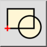
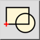
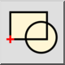
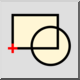

Opret blok fra valg
Værktøjslinje/ikon:
 

Menu: Blok > Opret blok fra valg
Genvej: B, C
Kommandoer: blockcreate | bc
Dette er en automatisk oversættelse.
Værktøjslinje/ikon:
 

Menu: Blok > Opret blok fra valg
Genvej: B, C
Kommandoer: blockcreate | bc
Opretter en ny blok ud fra eksisterende enheder.
Blokken er nu tilføjet til bloklisten, og der kan indsættes instanser af den i tegningen. De entiteter, du har valgt i det første trin, fjernes og erstattes af en blokreference til den nyoprettede blok.